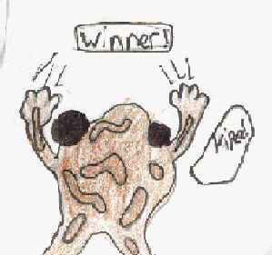
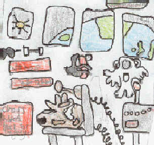
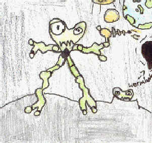

by John Michael Howe (07/11/2001)
Hopper was in his house, and he had a letter - he had won a competition that he had sent off for.
He had won the first trip to Mars with professionals !

He was extremely happy.
He rushed to NASA and told the guards that he'd won.
They let him in, and then he went to the launching pad, and he hopped in the space shuttle.
Then the counting went down ... 3 ... 2 ... 1 ... 0 ... LIFT OFF !!!!
There were signs saying "seat belt on".

The chairs are tilted back for safety and we have lift off.
The excitement was catching to him; he especially liked the bit when they lifted off and his cheeks were pulling all the way back to the rear of the shuttle.
Suddenly a red light turned on and it said "Warning !"
The fuel had run out and they were going to crash-land on the moon - B A N G !
They hit it - everyone was alright, and Hopper put on his frog space suit and started to explore.
He could jump 10 metres high. When he landed on his fourth hop he fell in a crater ... THUMP !
"Ow" said Hopper. Then he saw something move; he rapidly hid behind a rock. Then an alien came out looking for what that noise was. He had a ray-gun so Hopper knew he was evil.

Then the alien shot a rock near by Hopper, and it blasted it into smitherines.
Then Hopper peeked behind the rock and there were only 3 aliens - they saw Hopper and chased him.
Hopper did a super-hop back to the surface, but the spaceship wasn't there.
The other people were too freaked out so they left without him.
So he did a mega-super-duper-wopper-deluxe jump all the way back to Earth.
Oh no - there were stars everywhere again ! OOPS - he had landed in the planetarium !
The End